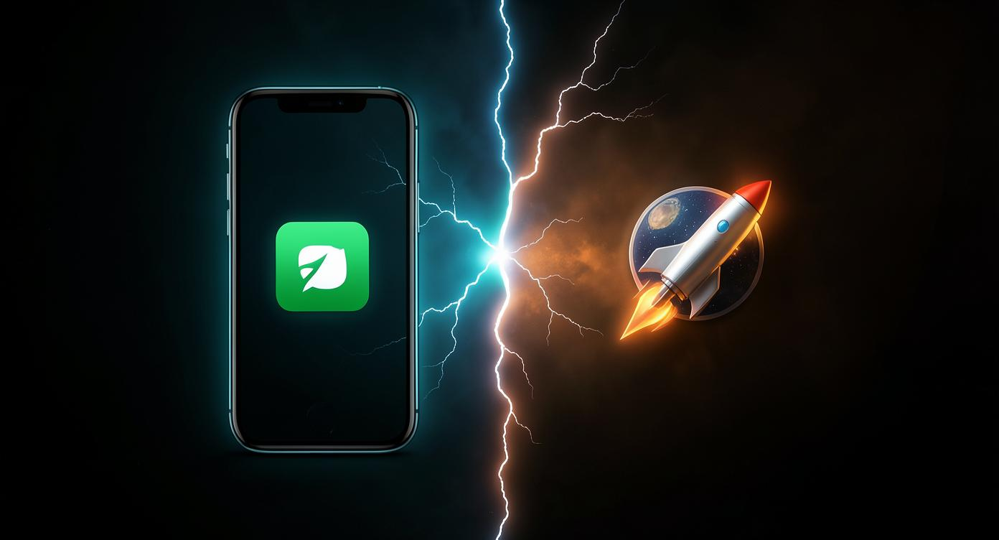

Elon Musk vs Apple: एप स्टोर एंट्री और AI की जंग

Elon Musk vs Apple: AI App Store विवाद की पूरी कहानी
हाल ही में Elon Musk और Apple के बीच AI App Store को लेकर विवाद तेजी से बढ़ा है। मस्क ने आरोप लगाया है कि Apple अपने App Store में ChatGPT जैसी OpenAI ऐप्स को ज़ोर-शोर से प्रमोट कर रहा है, जबकि उनकी खुद की AI ऐप Grok को जानबूझकर पीछे रखा जा रहा है।
मस्क के आरोप क्या हैं?
Elon Musk का कहना है कि Apple के ‘Must Have’ सेक्शन में हमेशा ChatGPT जैसी OpenAI ऐप्स को प्रमुखता मिलती है। जबकि उनकी Grok AI, जो तेजी से लोकप्रिय हो रही है, को Apple App Store के प्रमुख स्थानों पर जगह नहीं दी जा रही। मस्क मानते हैं कि OpenAI की पकड़ इतनी मजबूत है कि अन्य नए AI ऐप्स के लिए मुकाबला करना मुश्किल हो जाता है।
इस विवाद की पृष्ठभूमि
Elon Musk और Apple के बीच विवाद नया नहीं है। पहले भी Twitter (अब X) के मामले में उन्होंने Apple की नीतियों पर सवाल उठाए थे। इसके अलावा, OpenAI के साथ भी उनका मतभेद रहा है, जिसमें उन्होंने OpenAI की मूल सोच में बदलाव का आरोप लगाया था।
Apple का जवाब
Apple का कहना है कि App Store में ऐप्स को प्रमोट करने का निर्णय पूरी तरह इंसानी जाँच-पड़ताल और मापदंडों जैसे डिज़ाइन, यूज़र एक्सपीरियंस और इनोवेशन पर आधारित होता है। हालांकि, आलोचक मानते हैं कि यह प्रक्रिया छोटे डेवलपर्स और नए AI प्रोजेक्ट्स के लिए चुनौतीपूर्ण हो सकती है और पक्षपातपूर्ण भी दिख सकती है।
संभावित प्रभाव
अमेरिका में Apple पहले से ही मोनोपॉली के आरोपों का सामना कर रहा है। ऐसे में Elon Musk के आरोप App Store की निष्पक्षता और पारदर्शिता पर गंभीर सवाल उठाते हैं, जो टेक इंडस्ट्री के लिए महत्वपूर्ण है।